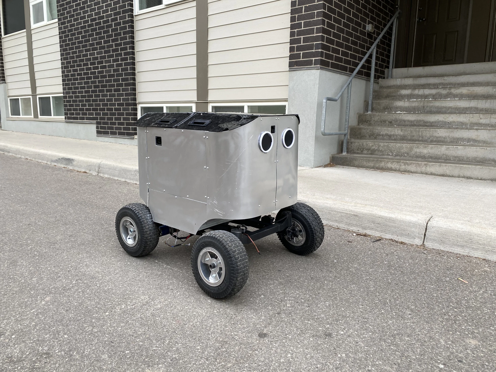
Caravel Robotics (2021)
Caravel Robotics: my first dollar
After leaving Watfly and going through a short stint helping run a derivatives trading Discord (thank you GME/AMC for the gains) I reconnected with one of the smartest guys I know, a friend who had worked on Watfly’s very early days back when it was a student team. He was leaving his cushy tech job in a Bay Area AP company to start a robotics startup, and I was invited to lead the design and build of their hardware platform.
Caravel Robotics will automate all physical jobs, he explained, by making tele-operated robotics more attractive than in-real-life labour. We will gather and learn on the data we get for free to automate the tasks in the job, and then move to the next industry and repeat. The first industry: food delivery.
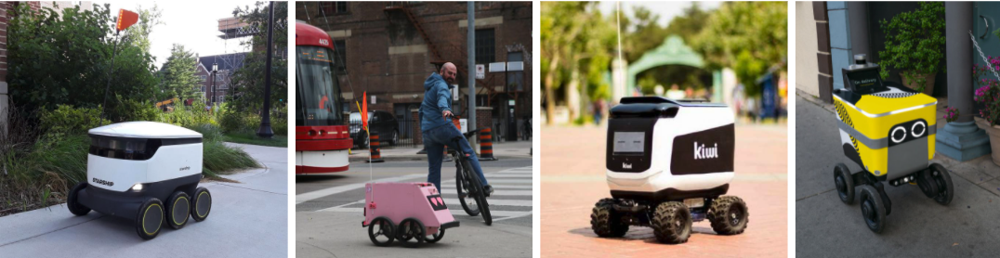
It was early 2020 and there were already a number of food delivery robot startups, a bunch had been around for many years, some had gone bankrupt, none had really scaled, but Caravel’s platform would be built from scratch on the learnings of their mistakes. Most food delivery robots operate in sidewalks, constrained by regulations to low speeds and small sizes. Others are attempting to drive on roads, which basically requieres developing full AP car capabilities a la Waymo. Caravel’s “Kona” would be a bicycle lane robot, allowing us to drive at higher speeds and support greater payloads (delivering multiple orders per trip, or “batching”, which is key for unit economics), meanwhile a human driver in Mexico would tele-operate the robot in the US, allowing us to monetize the wage arbitrage.
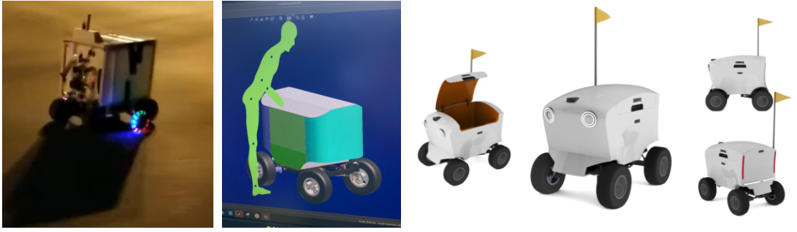
We immediately got to work, first as a fully remote team (just COVID-19 things you know) operating from 4 different time zones (Palo Alto, Toronto, Zagreb, and Cape Town). We started from a blank slate so the first step was to establish the platform’s characteristics. I usually start with the numbers that dictate the platform’s physics: payload capacity, maximum speed, acceleration, braking distance, range, turn radius, terrainability, gradeability, weatherability, mass, centre of gravity, lifetime, etc. Then move onto nice to have product features: exact camera placement, closures, lighting, proportions, aesthetics. You then iterate a couple of times through this process, as many parameters directly impact the platform’s mass primarily through battery size, and changes in mass impact the suspension design and kinematic performance. Other elements like wheels can affect the entire platform’s dynamics and can even involve input from an industrial design point of view (this is where your team’s priorities come into play).
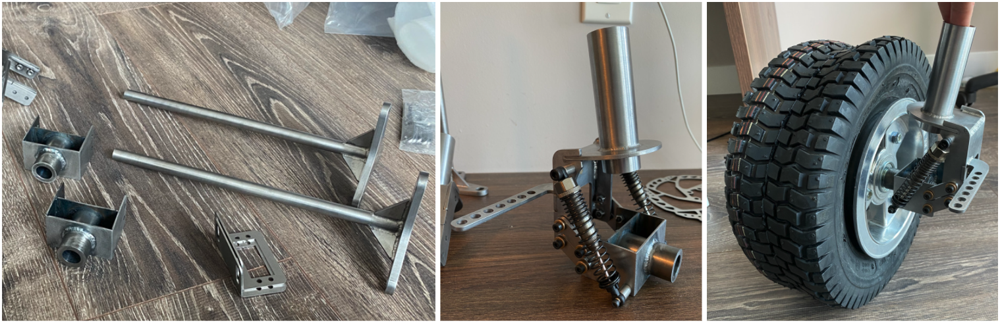
Ultimately you get to a point where a decision cannot be made entirely quantitatively and it turns into an engineering discussion. Would a sheet metal monocoque be better than a cab-on-frame construction? Should we run slim tires in the summer and thicker in the winter, or just go with all-seasons? would a cheaper but heavier steel structure be OK or do we want to go trough the trouble of finding a supplier that will weld thin aluminum and not destroy our bank? Given our small gear reduction, is the extra cost of a gearbox still worth it or could we manage to package a set of pulleys? Are we willing to compromise cargo space and/or aesthetics to achieve better camera positioning? Then everyone seems to want to put huge holes through every structure for accessibility and wire routing, suddenly weather-proofing becomes more complicated. Not to mention that every design decision has an implied cost which can be hard to estimate, and you are always working on a budget. Unfortunately I did not save pictures of all the 3D CAD iterations this time around but you get the idea.
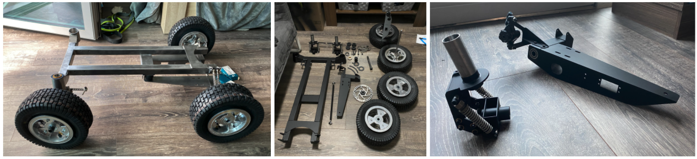
The team decided to go with a “cab-on-frame” construction with a frame inspired by an all-terrain wheelchair (originally we tried to get them to make a modified wheelchair for us, but they were like who are you). The cab or top portion would house two separate, thermally insulated food enclosures, each with dedicated lids, all of which are customer-facing surfaces. This assembly would also have lights, a safety flag, and a weather-proof enclosure to house all the electronics, onboard computers, and batteries.
Meanwhile the rolling chassis assembly had the structural frame, wheel assemblies, MacPherson Strut suspension assemblies on the front, simple trapezoidal suspension nodes on the rear, a rear axle disc brake and its actuator, an Ackermann steering with redundant actuators, and the full drivetrain including a gearbox. This also de-risked development as the biggest risks around the platform’s lifetime (another key metric for the unit economics of the food delivery robot model) where on the rolling chassis, so we could build multiple rolling chassis for the engineering team to use for homologation, tuning dynamic components and accelerated-aging activities. Looking back it would have been ideal to test reliability at a component level, as at this size and budget we were mostly dealing with hobby grade parts and they can be pretty hit or miss. This time around we had no time for that, we had set an aggressive timeline in order to get customer feedback ASAP.
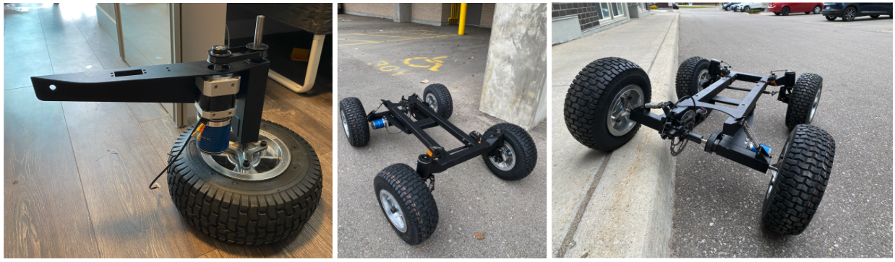
Having no in-house prototype capabilities (we did eventually buy a bunch of 3D printers and tools) was also a constraint which made things slower and expensive, as we relied on fabrication shops to turn around parts in weeks rather than hours. I think scrappy prototypes are a key part of any hardware develop project -the scrappier the better- but it’s especially hard for remote teams that rely on a single person trying to building something in their kitchen with no tools. Before I knew it I had parts from all over the world arriving at my apartment, and I started assembling the first rolling chassis while my girlfriend looked at me confused and my remote team cheered me on. It’s an unfortunate reality that as soon as you start assembling the first iteration of a product, you’ll notice obvious flaws and this was no exception.
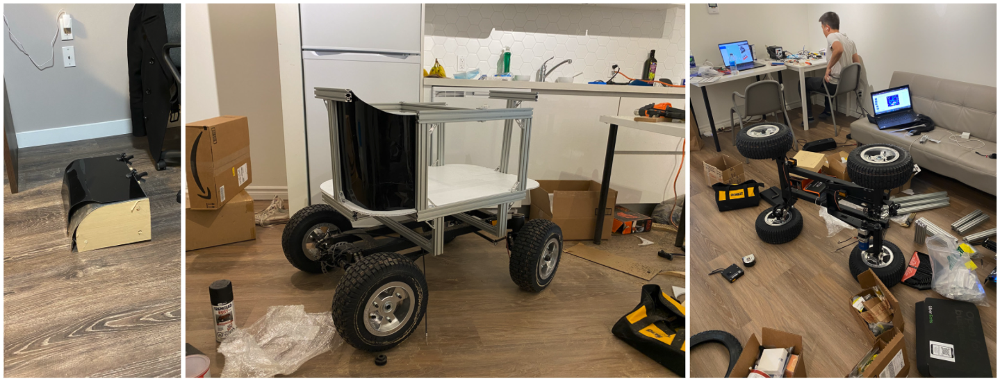
The team then converged in an AirBnB in Waterloo after a mid-pandemic grey area border crossing from the US to Canada, this became Caravel’s official HQ for a couple of weeks. Here the electrical wiring and firmware programming was done and for the first time we had a working robot with steering, brakes, and acceleration. With more tools in hand we started working on the food enclosure bit, despite the limited resources we still wanted to build a sexy robot so we came up with a strategy to thermoform acrylic sheets using wood and aluminum moulds, we would then throw them in my kitchen’s oven and we would get some nice big radii (heatguns wouldn’t cut it as the acrylic was too thick at 1/8”, another lesson learned).


Soon enough it was time for the first drive or ‘shakedown’, this is always an eventful event and we broke the drive pulley, bent some brackets, and encountered an electric issue where EM from the motor was being amplified by the non-insulated metal chassis and causing the on-board Jetson to reboot (the robot controller had a level of redundancy so it would not go crazy, but the remote driver would still lose connection). On top of this it became apparent that the robot was too heavy. Despite all of that, a few days later we were soon at a point where the robot was functional enough to drive around town, and while there were a number of improvements being worked on by the engineering team, it was time to start making money.
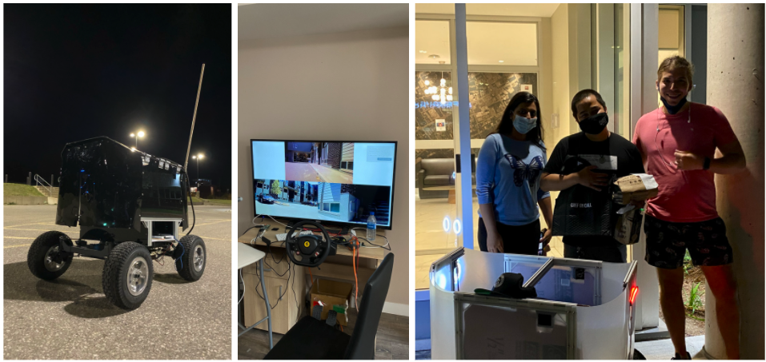
Caravel had started building partnerships with restaurants in the Bay Area but we were starting from scratch in Waterloo, the pitch was simple: UberEats takes a 30% cut to fulfill orders, unless you bring your own delivery drivers in which case they reduce it to 15%. You don’t want to deal with hiring and managing drivers, use our robot instead for a fraction of the 15% savings. With this general pitch we went door to door to every restaurant around our HQ (by now we were out of the AirBnB and working from a student townhouse), we quickly got a restaurant to agree to do a trial delivery to a real customer. Completing this order was the team’s first win!
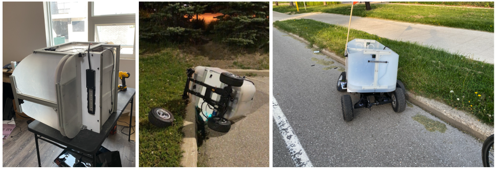
By talking to restaurants and running a first real order (plus a bunch of other orders to get lunch to the team on a daily basis) we got to learn more about restaurants’ needs and worries. They would often talk about controlling the presentation of the product, ensuring food was delivered quickly and hot, and general concerns that the robots would threaten their existing human delivery drivers (especially as the robots would initially only serve the shorter delivery routers, which were the most profitable for human drivers). It also quickly became apparent that the idea of having to deal with robots scared many of them: it was just another step that their employees would have to be trained on and worry about. I’ll just say that restaurant owners are simply not early adopters, they are super risk adverse (there is a reason why your local restaurant will not grow to be McDonalds). Meanwhile on the other side of the equation, the people receiving their food on our robot were loving it, and we started making appearances on social media.


Restaurants were not playing along but we felt the love of customers, so we launched a concierge-like delivery service where instead of partnering with restaurants, we would go straight to customers: you tell us what you want, and our robot gets it for you. We launch with a domain (www.WaterlooRobotDelivery.com) pointing to a Google Form and promoted the service with a sticker slapped on the side of our robot with the URL on it, super effective. Orders started coming in, this was our own version of “do things that don’t scale”. On the technical side this also helped get more miles on the robot so that we could continue improving the platform, some new issues surfaced and the robot even learnt a new trick: crashing onto things, repairs became a big time sink. This scale to the point where we started building a 2nd delivery robot (with a bunch of tech improvements on it)
We launched the robot delivery website and in parallel kept talking with more restaurants (there was a lot of orders downtime in between regular meal hours) while expanding our target establishments onto dispensaries, convenience stores, grocery stores, and delivery platforms like Instacart. During a conversation with a convenience store, the clerk mentioned that they were averaging 1,000 delivery orders a week. Mind you this was in a small university town during a pandemic, when the campus was closed and most of the students were not around. At the same time we were hearing about the emerging rapid delivery startups in Europe and NYC, including Gorillas and FridgeNoMore. With these strong signals and virtually no competitors in sight (even now many months later there are no serious competitors in Canada), we decided to test this model.
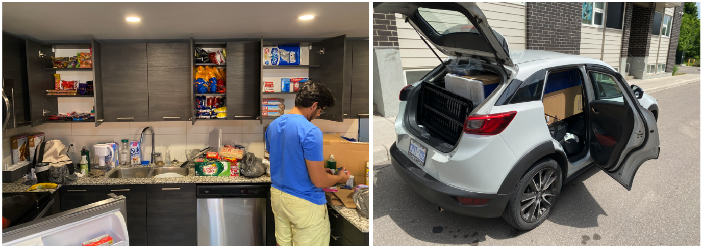
Our prototype 10-minute convenience store delivery service first launched in Waterloo under the name “Ninja” (because ninjas are fast and I was obsessed with Gorillas’ dark-palette branding and wanted to do something similar). All it took was setting up a Shopify store to route orders (takes 5 minutes) and an OpenPhone account to text customers, that was pretty much the whole infrastructure. The products listed on our website were based off the best selling items of local convenience stores listed on UberEats and DoorDash, ordering them on Instacart to our address and stocking them in our kitchen cabinet. We went as far as removing cabinet doors just so we could access them quicker, it may sound dumb but it’s small things like this that show a startup’s DNA even from early on. Then we texted every person who had ordered from our robot delivery service in the past, letting them know about the new lighting speed convenience store delivery service. On top of that, 500 flyers deployed strategically around a 1 mile radius of our house got us our first customer within minutes of launching.
Your first order hits different but this didn’t really mean we had traction, no one really knew of our service and people who saw our flyers didn’t know if they could trust our website. Next we got listed on UberEats and DoorDash as a way of funnelling new customers and compete hand-to-hand with the inferior services, deployed even more flyers, launched Facebook ads and a social media campaign primarily focused on Reddit and Discord. Orders were growing but the wheels were not coming off, so we decided to throw more fuel into the fire by sponsoring university events. We started targeting student clubs and associations as promotional opportunities, in the past (pre-pandemic) they would host on-campus events with free food to attract students, but now that campus was closed and events were online there was no more free pizza. What if we could help them make the people attending their online events feel the love with some ice cream delivered to their door? And so we sponsored a weekend long hackathon: orders exploded and we simply could not keep up, delivering ice cream through the night during a storm (a night I will never forget). It was at that moment when it became obvious this model had traction and it was time to go all in on this and scrap the robots. Unfortunately this also meant restructuring our team and letting go of some talented individuals, but delivering on electric bicycles simply aligned better with the new model and the robots did not add immediate value.
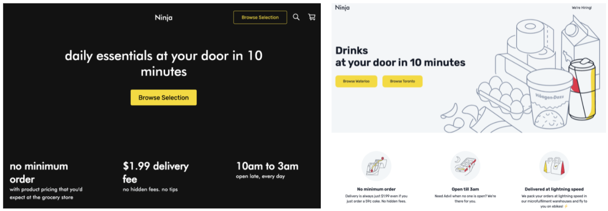
We started expanding our SKUs and inventory, including launching a new concierge-style service where we would deliver any item to you regardless of it was listed on our website or not, at no extra price. This allowed us to do product discovery (what products do people want that we don’t currently stock?), keep growing our orders, and also increase our AOV (average order value) which is an important KPI for this space. Soon we were buying fridges and freezers to hold more and more inventory, expanding into categories such as produce, frozen treats, dairy products and what not.
Ninja kept on sponsoring student events to the point where we talked to every single student club in town (mind you there are 3 different universities in Waterloo), and even expanded our hours from 10AM to 3AM. We also maintained a permanent presence with our flyers throughout town (whenever we had someone delivering to a building, this was also an opportunity to place flyers in the lobby and elevators) to the point where we were getting emails from building managers asking us to stop. The efforts on social media continued and maybe even went too far, getting banned off r/uwaterloo (lol). All of these decisions were data driven: Should we expand our hours? Let’s check the orders time heat map. Should we spend more on flyers or should we do Facebook ads instead? Let’s check the customer attribution data. Should we stock more of any item? Let’s look at what’s going out of stock too quickly. Even from day 1 when Ninja was a shot in the dark, we were collecting data and running experiments methodically, this is the culture that ultimately I believe will make Ninja succeed in a market that is getting increasingly competitive.
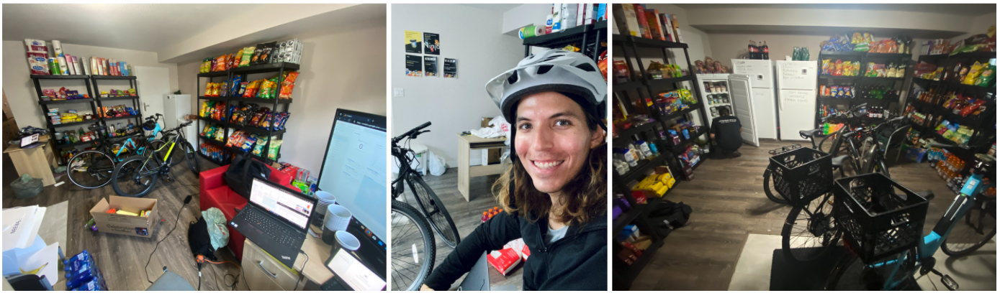
We got even more aggressive with our marketing campaigns, recruiting UberEats drivers to hand out our flyers with every order they delivered. Next we expanded our product selection: how can we get customers coming back every single day? Ninja Cafe, a Starbucks-esque coffee delivery service that delivered freshly brewed coffee to your door in 10 minutes, with a ton of customization options (inspired by the huge line I saw every morning outside of a coffee shop on my way to work). People who drink coffee tend to do it every day and coffee immediately made it into our top 5 sellers, what other products are legal and addicting? Cigarettes, cannabis and alcoholic beverages are highly regulated in Ontario but we were able to launch electronic vapes, another successful launch right off the gate boosted by the fact that all the local vape stores closed at 10PM and we went until 3AM ( a small but important market inefficiency that the team was able to spot). Other products included fireworks for festive dates, moving supplies for the end of school term, and a printing service (the campus library was closed so there was basically no where else to print). Another marketing strategy we came up with was placing Ninja stickers on every product that went out of the door, specially large products that people would share or would last a long time such as large Coca Cola bottles or a ketchup bottle. Stickers on products were not only a promise of quality but also a way of staying in our customers’ minds throughout the day, plus it created an opportunity for their friends and roommates to see and wonder what Ninja was (the great thing about selling to students is that they often live closely packed together and are usually very social). On the same social note, we started giving away Ninja-branded beer pong sets on weekend nights whenever we suspected we were delivering to a party. If you are thinking that’s a lot of different initiatives, I’d say that we were very focused on adding value on top of our initial service, and as per Ninja’s DNA, running a lot of experiments to determine what’s the best way of doing so.
Eventually we filled the entirety of our house with shelves, fridges and electric bicycles. Orders were growing at a rate of well over 20% week over week (what YC calls success for cohort companies), AOV was steadily increasing as we grew our selection, and most importantly customers were coming back (this is where it gets really fun, as you can then responsibly increase your CAC). It may all sound like an odyssey now but it all happened during 4 eventful months with a team of 2 founders and 1 intern. The team that originally started making robots to take over the world was now delivering goods in less than 10 minutes, the business changed but the ambition did not and so it was time to start expanding into new cities. Ultimately how many people you can serve (aka how much you can grow) is a function of how many people are in your delivery area, so with our model validated and some rough idea of how to launch and operate the service, we aimed for the most densely populated cities in the country. I won’t say much beyond this point as it still feels very fresh but Ninja raised a substantial funding round and started signing leases for commercial locations, hiring aggressively, and negotiating all kinds of contracts for electric bicycles, contractors, supply chain, marketing campaigns and what not. Our original store was ‘operational intensive’ but that term got a whole new meaning once Ninja started to expand.
I get asked what’s the difference between the Ninja model and Uber, certainly I am no expert but I see it as a bet between the current 3rd party (3P) status quo where: Uber doesn’t have any stores, own any inventory and does not have any employees. Versus a 1st party (1P) model where a company owns the inventory, locations, and directly employees people. Where companies like Ninja bet that the higher efficiency of 1P vertical integration will eventually lead to better margins compared to 3P, despite the higher capital requirements. And to the people questioning whether we really need 10 minute delivery, I think some of us will not be satisfied until we’ve achieved teleportation.